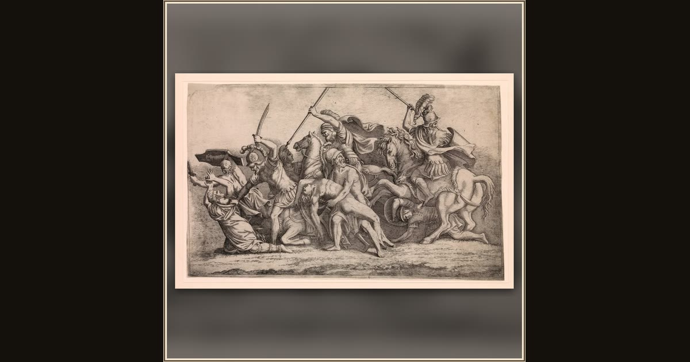

Achilles Removing Patroclus' Body From the Battle
Léon Davent · ca. 1547 · met
An etching of Achilles lifting the dead Patroclus out of a cavalry battle; Aristotle cites Achilles' aid to Patroclus as a noble deed praised against expediency (1.3.6) Explore its place in Aristotle's Rhetoric, Book I, section 42.